30 day map challenge
This year, I took part in the 30 day map challenge. I didn't manage to complete every single day, but I did my best, and I loved thinking about the datasets and picking the color palettes. Below are the maps I've made, with descriptions and links to data sources where relevant.
The code and all maps can be found in this github repository.
It's been an interesting experience thinking about how information is visualized in maps. As scientists, we spend a lot of time thinking about the clearest way to convey our findings, but we often have a particular pattern in mind that we want to emphasize and to distill years of work into a single figure. In contrast, I found myself wanting to mentally 'zoom out' a lot when making these maps.
Emphasizing any one aspect too much felt like losing track of the territory - but including all of the available information felt like I was no longer looking at a map of anything at all. As with many parts of life, this mapping adventure was an exercise in calibrated redundancy. Sometimes I succeeded, sometimes I failed, mostly I hoped for the best while waiting for my laptop to render.
This challenge has also made me think a lot about how we absorb information from maps. It's a little funny (in a sad way) that I research spatial navigation and have only learned recently that humans vary dramatically in how well we read maps. It's not surprising, of course, given everything else we know about variability in navigation skills.
Some of the best navigators among us (London taxi drivers) learn by reading maps, intensively, and then relating the 2D representation to the territory. It's no wonder that it's a multi-year undertaking - but the directionality of the causal arrow is an interesting question. Is it that some people extract spatial structure just by glancing at a map and this skill can be honed, or is it that anyone could develop elaborate map-reading abilities if they put in years of practice?
Either way, it seems important to understand human memory and behavior if we want to help people find their way in the world.
Day 1: Points. Philadelphia Tree Inventory.
Visualizing how green Philly's streets are. Lower tree canopy coverage relates to more heating in the summer - which tends to happen in underserved neighborhoods.
Data: OpenDataPhilly.
Day 2: Lines. Philadelphia bike lanes and High Injury Network.
Overlaying the Vision Zero high injury network (orange) with existing bike lanes (teal) in Philly.
Data: OpenDataPhilly.
Day 3: Polygons. Beer, wine, and spirits in Europe.
Data: Our World in Data.
Day 4: Hexagons. Cardinal observations in North America.
Cardinal sightings between October-December 2020.
Data: GBIF.
Day 6: Red. Wildfires in the continental US 2010-2020.
Visualizing wildfires between 2010-2020 in GIF form.
Data: NIFC.
Day 7: Green. Forest coverage as the % of land area in 2020.
Data: Global Forest Watch.
Day 8: Blue. A small section of the Alps.
My first attempt at using rayshader.
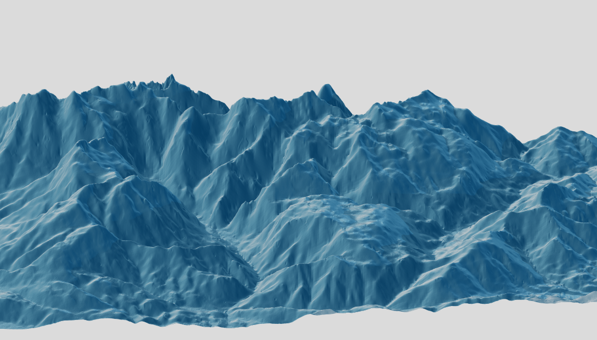
Day 9: Monochrome. A map of London.
Data: OpenStreetMap for R.
Day 10: Raster. Phytoplankton.
Chlorophyll concentration in the world's oceans in September 2021.
Data: NASA Earth Observations.
Day 11: 3D. Population density in Toronto.
Density of population in each postcode (N residents / area) in 2016. Darker shades and higher elevation indicates greater density.
Data: Statistics Canada.
Day 12: Population. % of Canadian population who rent.
Percentage of residents who rent in each census district in 2016. The size of the circle indicates the population of each district, the shade indicates the percentage of renters.
Data: Statistics Canada.
Day 13: Data Challenge: Natural Earth. A map of the Balkans/Southern Europe.
Generated using QGIS.
Data: Natural Earth Data.
Day 14: Mapping with a new tool: kepler.gl.
Philly street litter index (brighter colors = more litter) vs. the locations of Big Belly bins in the city.
Data: OpenDataPhilly.
Day 15: Mapping without a computer.
A hand-drawn map of the overlap between downtown Toronto and central London (not to scale!). The idea was to show how the two central areas overlap within the same conceptual bounding box.
Day 16: Urban/Rural. Iceland.
Mapping population density in Iceland, highlighting Reykjavik as the only urban area.
Data: OECD.
Day 17: Land. Distance to nearest landmass.
Distance to the nearest coast on land (red/pink hues) and sea (green hues).
Data: NASA Earth Data.
Day 18: Water. North American rivers and lakes.
Plotting every river and lake in North America. Created using QGIS.
Data: Natural Earth Data.
Day 19: Islands. The Lofoten archipelago in Norway.
Created in rayshader using the elevatr and raster packages.
Day 20: Movement. Where do Slovenians emigrate?
The data seem pretty incomplete (e.g., the UK is missing) and a lot of it is collapsed for the whole continent: Asia, South America, Africa.
The hue of the line indicates the number of emigrants (warmer hue = higher number). The numbers are log values - they were otherwise skewed by a few countries with very high values.
Data: Slovenian Statistical Office.
Day 21: Elevation. Memorable hikes of 2021.
Plotting my favorite hikes of 2021.
Created in R using the elevatr package to download elevation rasters.
Day 22: Boundaries. European country and US state borders.
Overlaying European country (L) and US state (R) borders. Not completely to scale due to projections.
The color of the outline indicates the rank of each country's/state's area (higher rank = larger area).
Day 26: Choropleth. NBA championship wins by state/province.
Warmer colors indicate more wins (starting in 1950). Light grey indicates that the state has an NBA team but no wins (yet).
Data: Wikipedia.
Day 28: Flat Earth. Shenandoah.
I missed quite a few days in the last part of the month mostly because I was out exploring the world, so no time to map it!
I spent a few days in beautiful Shenandoah national park. And while this map doesn't reflect the Earth's curvature, which was the intention behind this day's challenge, it's still definitely not flat.
Day 29: NULL. Zero elevation
For the final day, my goal was to plot areas with the elevation closest to zero. However, NULL != 0. So this map does not quite fulfill the brief but I'm including it anyway.
Data: NASA Earth Data.

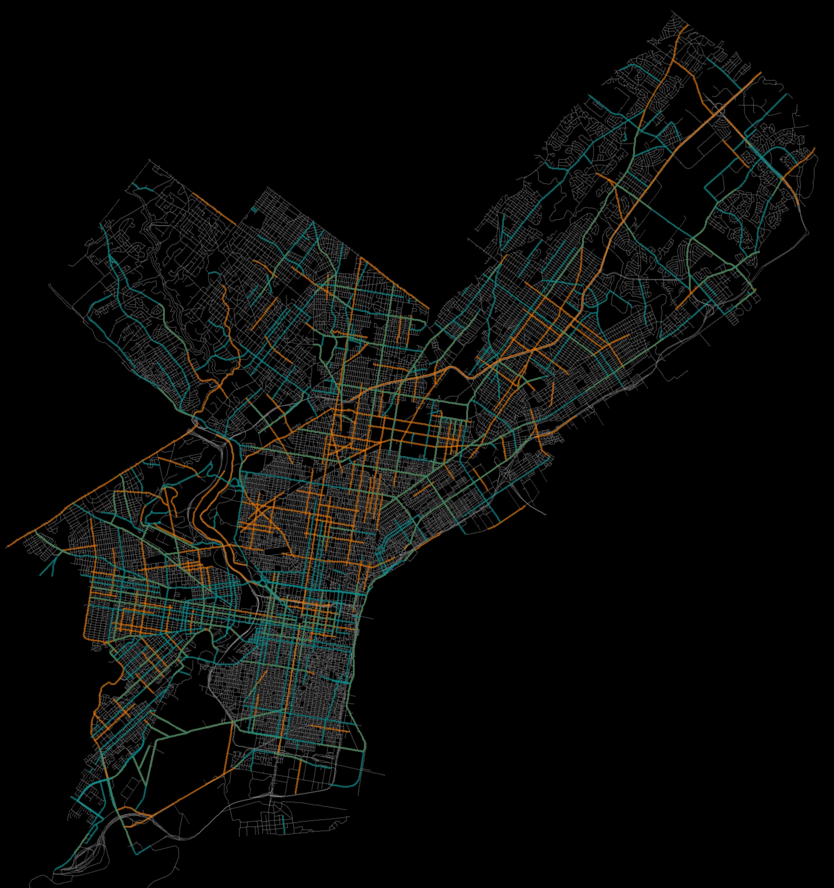


Over the past decade, we have lost 4.5 million hectares of forest per year.
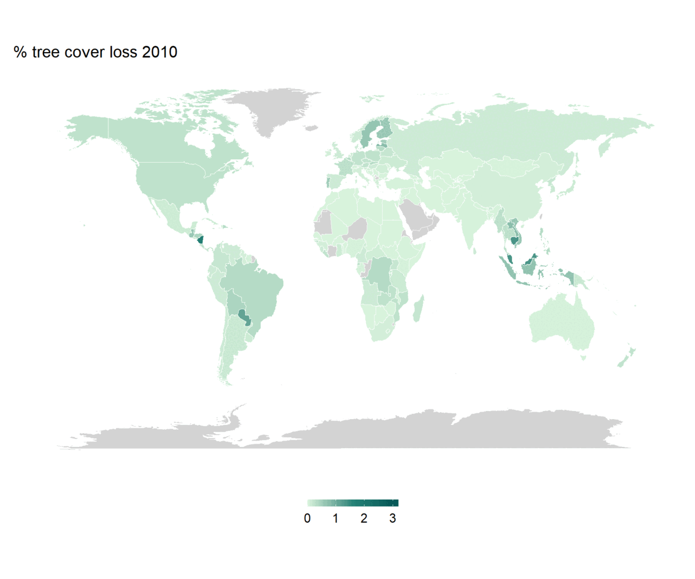

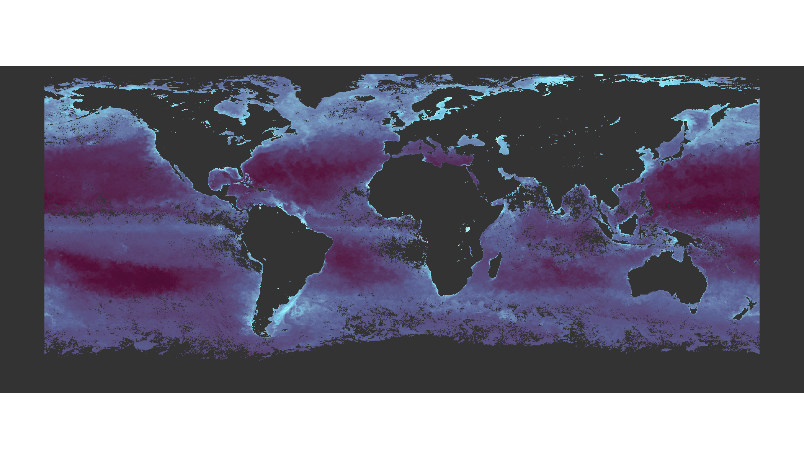
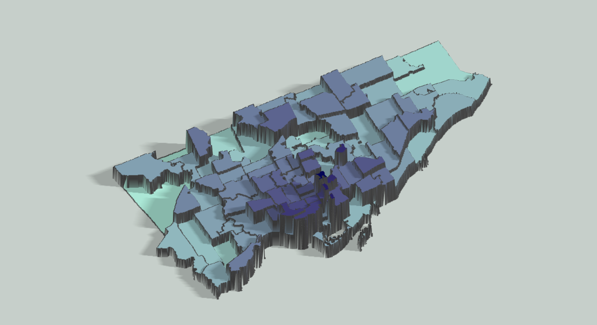
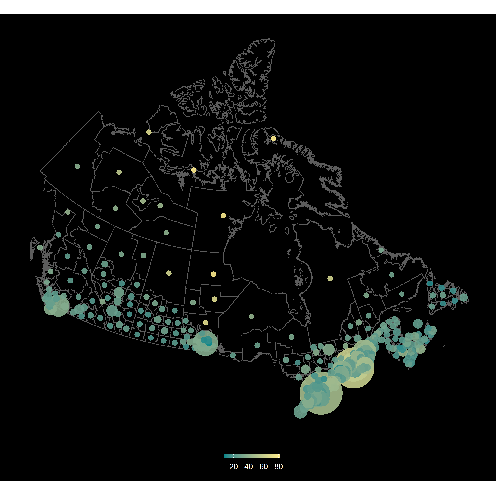
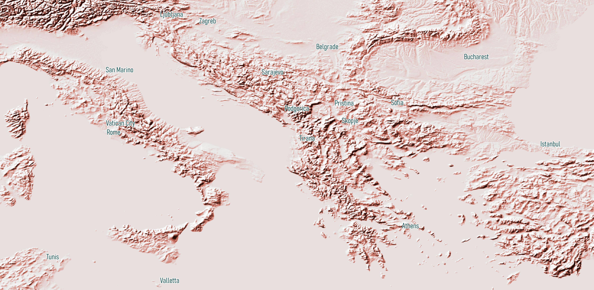
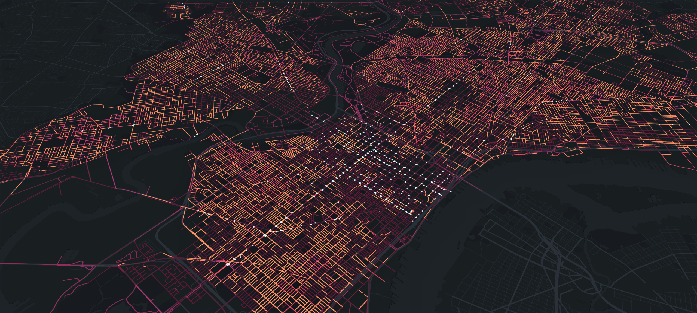
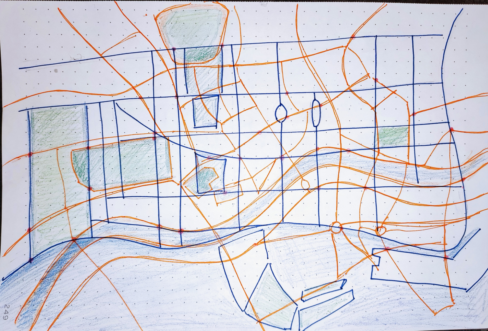

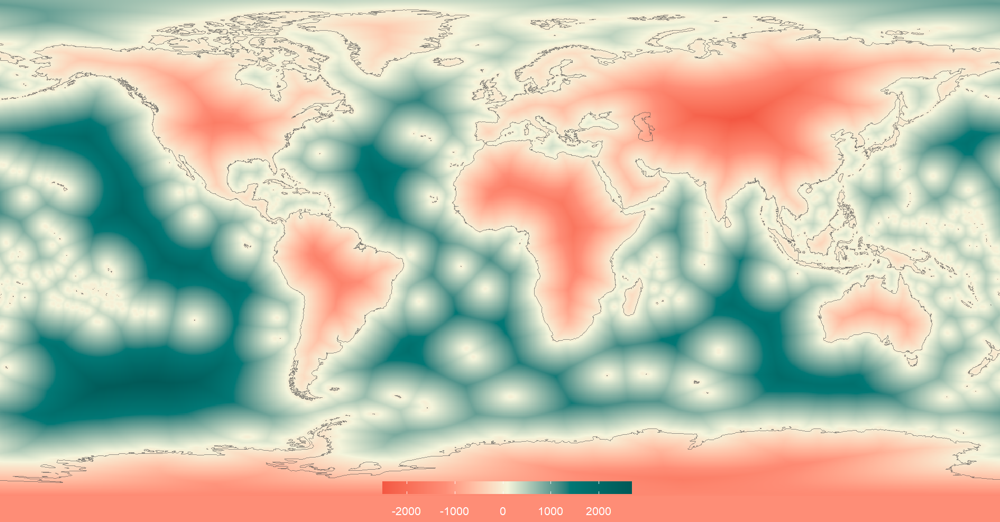


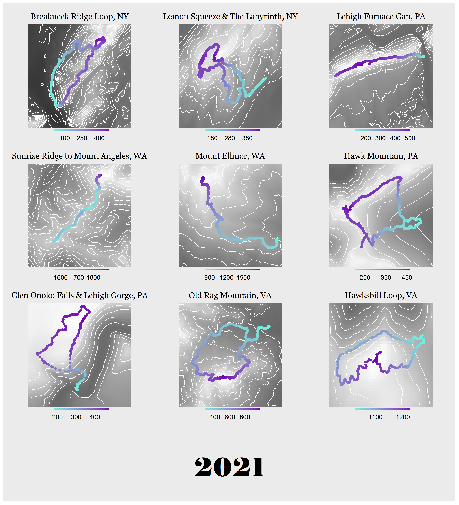


I also decided to plot the map of all the championship wins that actually matter, please enjoy:
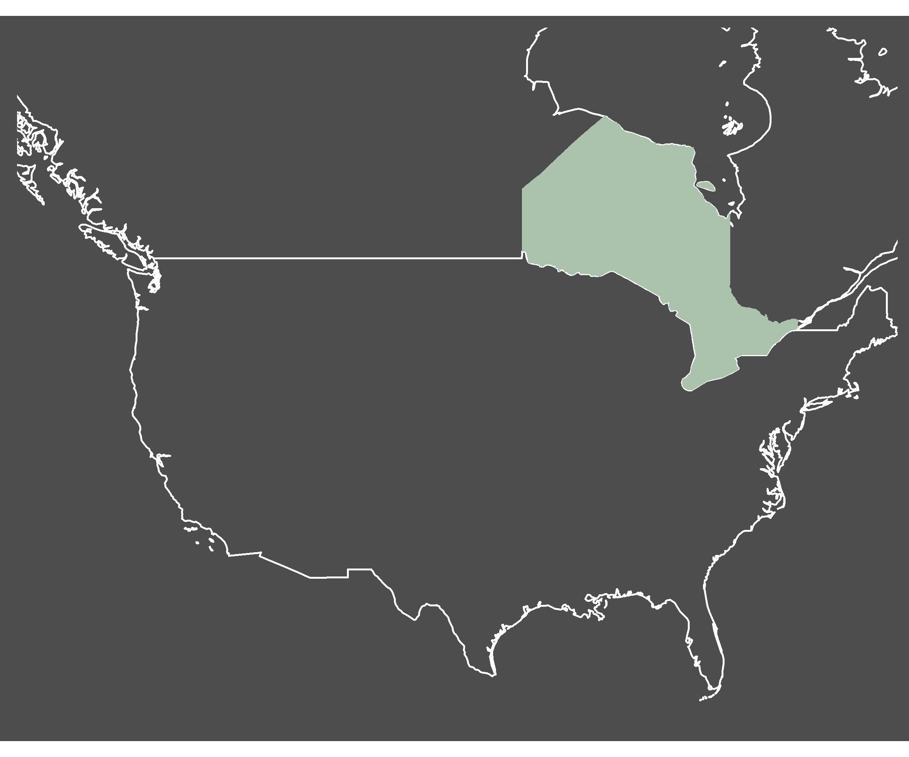
Created using rayshader.
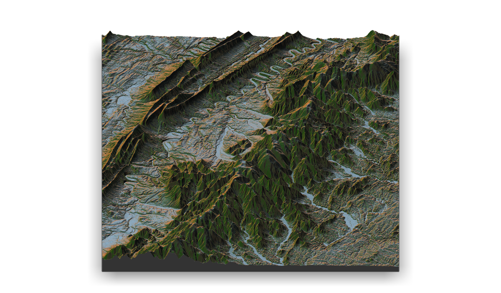
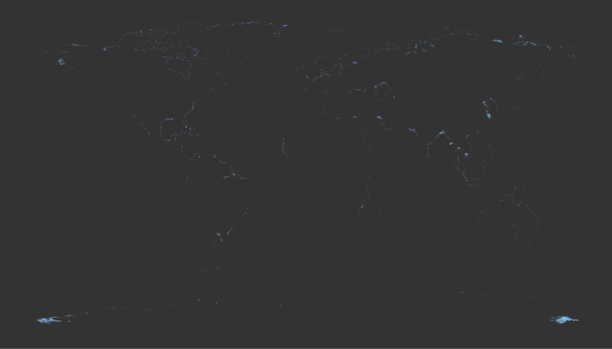
That's it! Next year, I hope to complete every single day, but 23/30 is not bad.